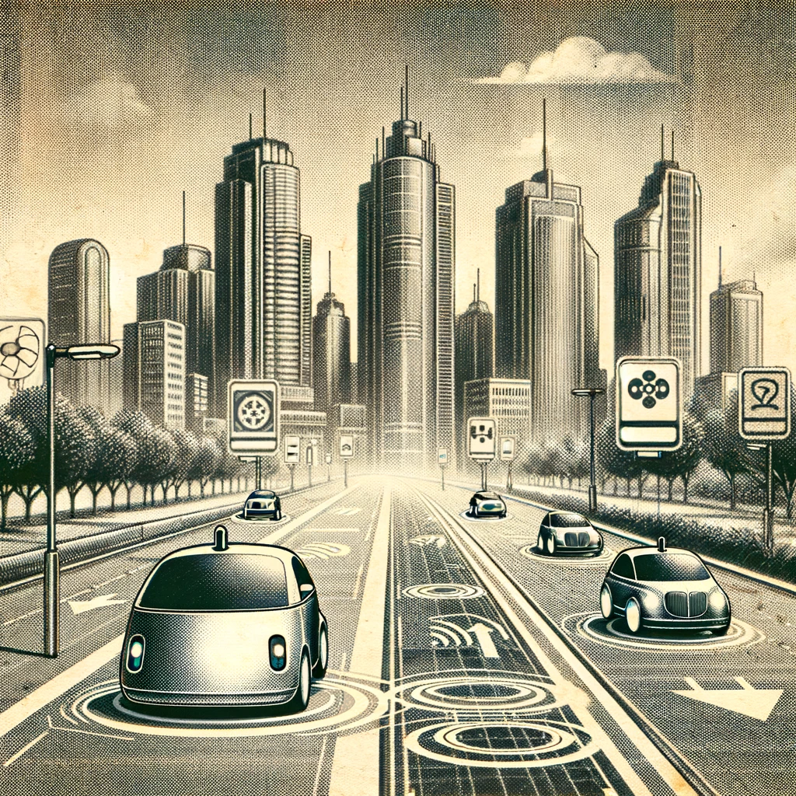

En un avance sorprendente, ingenieros han anunciado el desarrollo de ciudades flotantes, utilizando tecnologías de levitación avanzadas. Estas maravillas arquitectónicas, flotando sobre las nubes, prometen una nueva era de urbanización. Con espacios verdes y sistemas de transporte aéreo, estas ciudades prometen ser el pináculo del desarrollo sostenible. Expertos afirman que este concepto, una vez considerado ciencia ficción, podría ser una realidad en la próxima década
El mundo del transporte está siendo revolucionado con la llegada de los carros autónomos. Estos vehículos, equipados con inteligencia artificial y sistemas avanzados de sensores, prometen hacer de los viajes una experiencia más segura y eficiente. Las pruebas en varias ciudades han demostrado su capacidad para reducir el tráfico y las emisiones de carbono. Con esta tecnología, el concepto de 'conducir' está siendo redefinido, abriendo camino a un futuro donde los carros se conducen solos.
